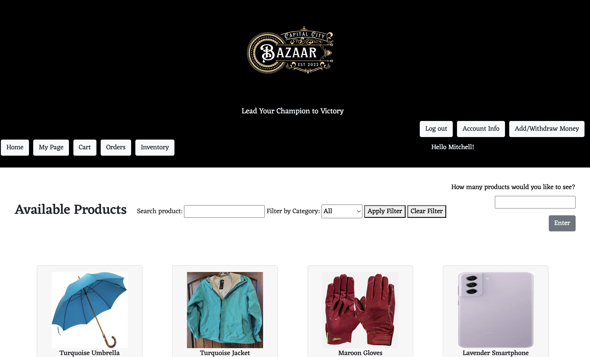

Full-Stack · Databases
Arena Marketplace: Survival Gear Shopping for Tributes
A Hunger Games-inspired mini-Amazon built on a relational database. I integrated user accounts, product listings, and transactions, ensuring seamless functionality and a smooth shopping experience under simulated high-stress conditions.